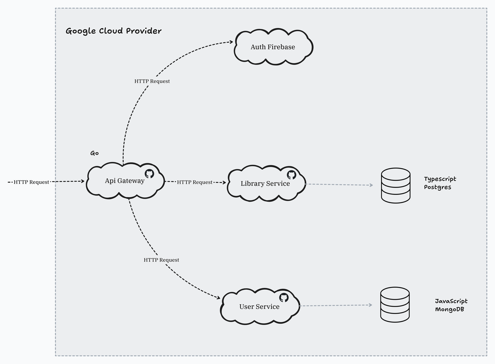

Documentación
Documentación de nuestra aplicación, junto con la arquitectura que la acompaña.
Arquitectura general

Nuestra aplicación corre en cloud utilizando los servicios de GCP (google cloud provider), como se puede ver en el diagrama, siempre que se intenta acceder a algun recurso es a traves de HTTP y debe pasar por el gateway. Este se encarga de las validaciones basicas verificando que tenga el token de acceso, y ruteando el request al servicio que corresponda.
Luego, contamos con 2 servicios propios y uno que utilizamos de firebase. Empezando por este último, es el encargado de manejar el inicio de sesion y los registros de los usuarios, ya que lo encontramos como la manera mas sencilla y eficiente de hacerlo.
Por otro lado, los 2 servicios que estuvimos implementando son:
Servicio de Library, maneja todo lo relacionado a canciones y albumes, es el core de la aplicación. Esta implementando en typescript y utiliza postgres, hosteado en supabase.
Servicio de Users, encargado de manejar artistas y usuarios de la aplicación y las relaciones entre ellos. Este utiliza javascript y mongoDB, hosteado en mongodbAtlas, para funcionar.
Por otro lado este mismo servicio tiene un endpoint particular que es utilizado por los demas servicios que es el de subir un archivo (ya sea de sonido o una imágen) a Google Cloud Storage, tomamos esta decisión por que no le vimos sentido a crear un microservicio para que solo tenga este endpoint, y tener repetido la lógica por ejemplo en el servicio de Users y en el de Library para que por ejemplo uno solo cargue sonidos y otro las imagenes, tampoco lo vimos muy util.
Para notar, tambien tenemos el monitoreo de nuestra aplicación utilizando pub/sub de google cloud, para que envie los logs a new relic y poder monitorearla